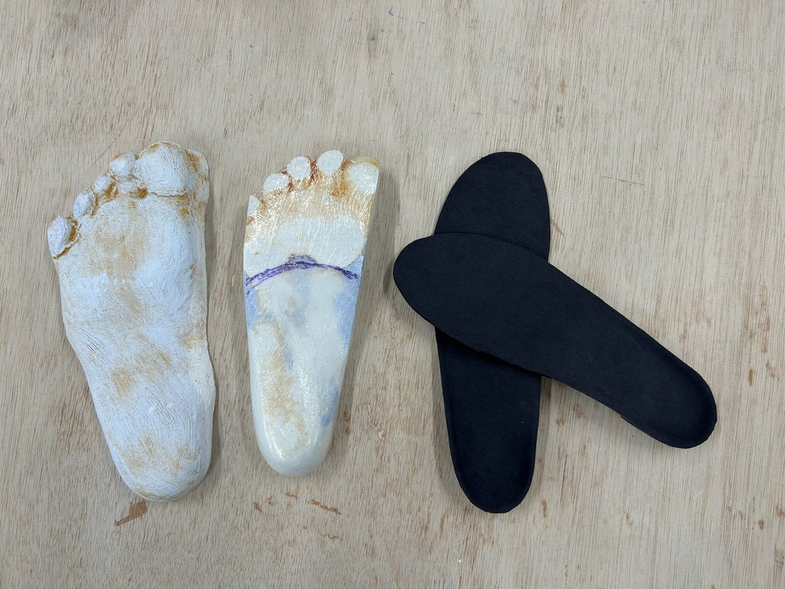
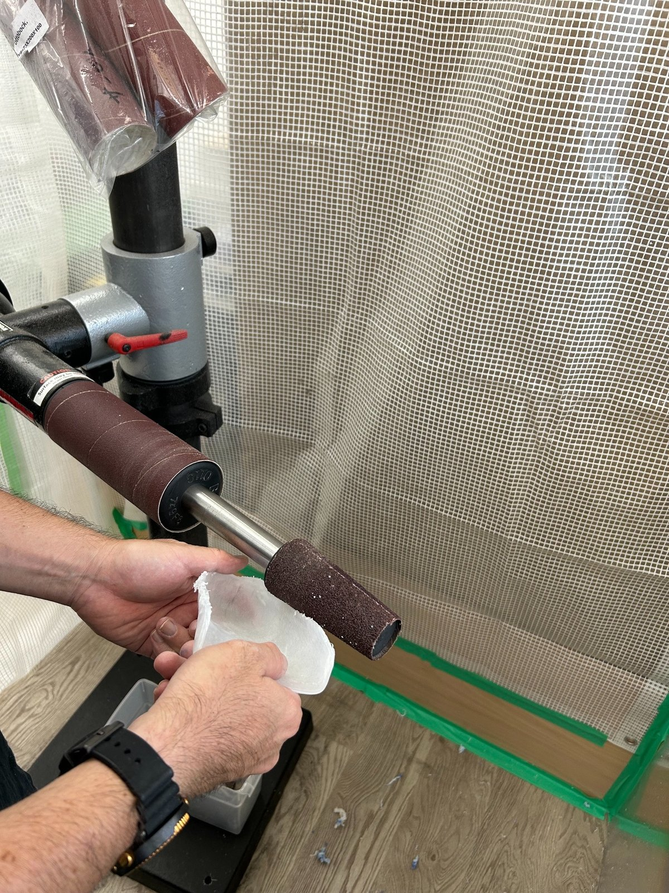

足の状態を確認
足の形や状態を確認し、必要な支持や形状を検討します。
CUSTOM INSOLES
沖縄県那覇市三原で、足の状態・歩行・姿勢を確認し、一人ひとりに合わせたインソールを丁寧に製作しています。足底筋膜炎・扁平足・外反母趾・変形性膝関節症・アキレス腱炎など、足や膝の症状でインソールをご検討の方もご相談ください。症状や使用目的に応じ、必要に応じて医師の指示をもとに製作・調整します。
「自分に合うインソールを相談したい」「医師からインソールを勧められた」など、
まずはお気軽にお問い合わせください。
受付時間 9:00～17:30 定休日 土・日・祝日

ABOUT INSOLES
オータス補装具工房では、既製品をそのまま合わせるのではなく、足の状態や歩き方、姿勢などを確認しながらオーダーメイドインソールを製作しています。日常生活で使用する靴や目的も確認し、使いやすさを大切にしながら調整します。
足の形や状態を確認し、必要な支持や形状を検討します。
立ち方や歩き方も見ながら、一人ひとりに合う形を考えます。
使用時の状態を確認し、必要に応じてフィッティングを調整します。

WORKSHOP
沖縄県那覇市三原の工房で、インソールの製作・調整まで対応しています。補装具製作で培った技術を生かし、足と靴の状態を確認しながら丁寧に仕上げます。
インソールについてわからないことがある場合も、まずはお電話でご相談ください。
CONSULTATION
「オーダーメイドのインソールについて知りたい」「今使っているインソールが合っているか相談したい」「自分の足や歩き方に合わせて作りたい」など、気になることがあればお問い合わせください。
症状や治療に関する判断については、必要に応じて医療機関への受診をご案内する場合があります。
CONTACT
沖縄県那覇市でインソールをお探しの方は、まずはお気軽にお電話ください。
098-987-0655 受付時間 9:00～17:30 定休日 土・日・祝日 ホームページに戻る